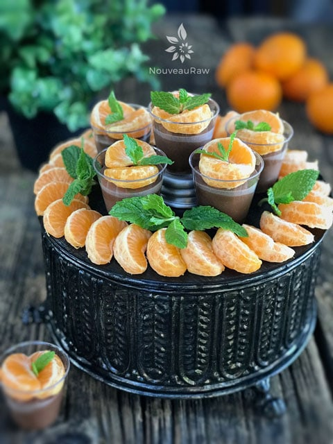

Velvet Chocolate Mousse Party Cups

~ raw, gluten-free, grain-free ~
Bob and I love hosting parties… we don’t do it near enough, but we are talking about changing that. :) For our last gathering, I turned to my faithful Velvet Chocolate Mousse recipe. It’s been on the site for years and turned out to be a true crowd-pleaser.
So, yea this recipe isn’t new, but I thought I would share how I served it up… party style (spoken with flare as I flip the hair off my shoulder hehe).
Whenever we host parties, I always serve raw desserts in single portions. I find that most people can’t trust their eyes as they dilate in pleasure while gazing upon them. People tend to underestimate the dense, rich, nutritionally packed desserts and serve up far too much for themselves. I can’t blame them, I would do the same.
But this time around, I took it a step further… I served up “sample sizes.” If you want to serve a variety of desserts, I recommend this approach. It allows the guests to taste test everything without getting a belly ache from overeating.
There is a cuteness factor too. I love tiny, trial-sized items and that goes for food too. I have an itty bitty bottle of Heinz ketchup in my drawer from over ten years ago that I just can’t part with. It’s just too cute! hehe
It was fun to watch the guests walking around, connecting with others, and diving their little spoons into the cups… almost licking them clean. Oh, that reminds me. If you do serve desserts in tiny cups, be sure to have tiny utensils too. That way they can reach the bottom of the dessert. Although, it would be funny to see them trying to cramp a full-sized spoon in the mouth opening of that little cup. I am a little mischievous, aren’t I? hehe
You can top this mousse with anything that you want, just make sure that it is small in size too, so it doesn’t overpower the presentation. Fresh fruits work the best, nuts following. The beauty of fresh fruit is that you can color coordinate the fruit to your party theme. Yep, I do think of such things. :) I encourage you to have a sampler taste-testing party, using darn near just about any recipe on this site. If you do, please keep me posted! Blessings, amie sue
yields 2 cups (12 / 2 oz) servings
- 3/4 cup (158 g) raw coconut milk or canned (BPA free)
- 1/2 cup (104 g) coconut oil, melted
- 1/4 cup (89 g) raw honey
- 10 drops liquid stevia
- 1/4 tsp (1 g) coffee flavoring
- 1/2 cup (76 g) raw cashews, soaked 2+ hours
- 6 Tbsp (35 g) raw cacao powder
- 1/4 tsp (1 g) Himalayan pink salt
Preparation:
- Place the ingredients into a high-powered blender in the following order; coconut milk, coconut oil, honey, stevia, vanilla, cashews, cacao powder, and salt. Blend until creamy.
- If you feel any grit, continue blending till completely smooth.
- By placing the wet ingredients into the blender first, it will help the blades move more freely.
- Taste test and see if you desire more sweetener.
- The mousse will be very runny after blending. Trust me, it will firm up once chilled all the way through.
- Pour into party cups and place in the fridge to firm up; this will take 1+ hours.
- The mousse should keep for 3-4 days in a sealed container in the fridge and a few months in the freezer.

© AmieSue.com